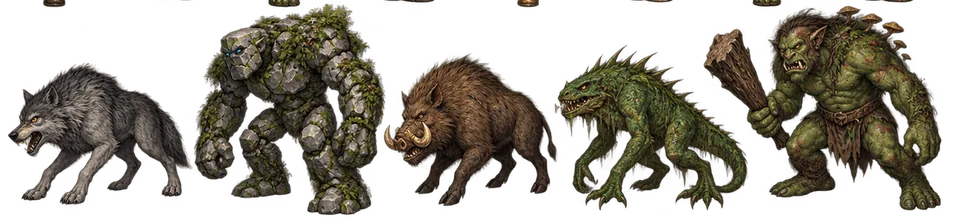
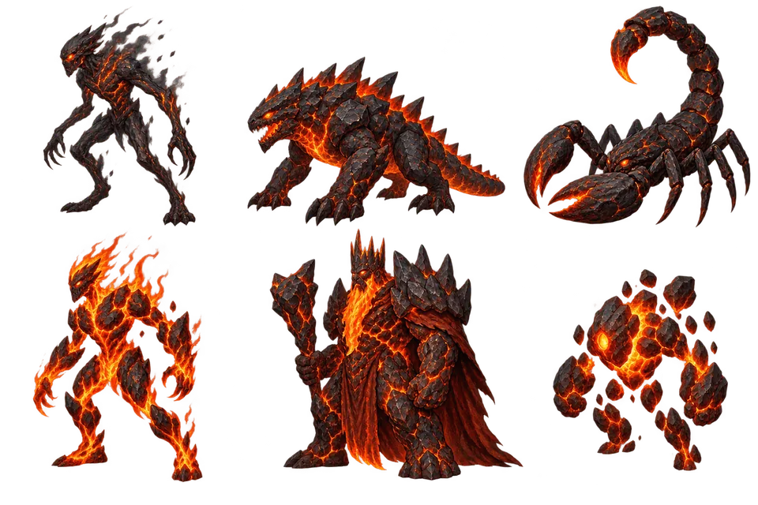
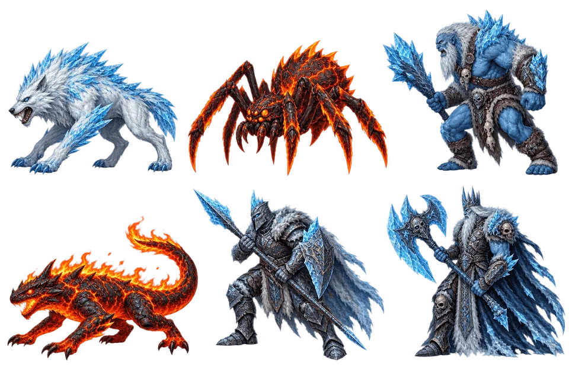
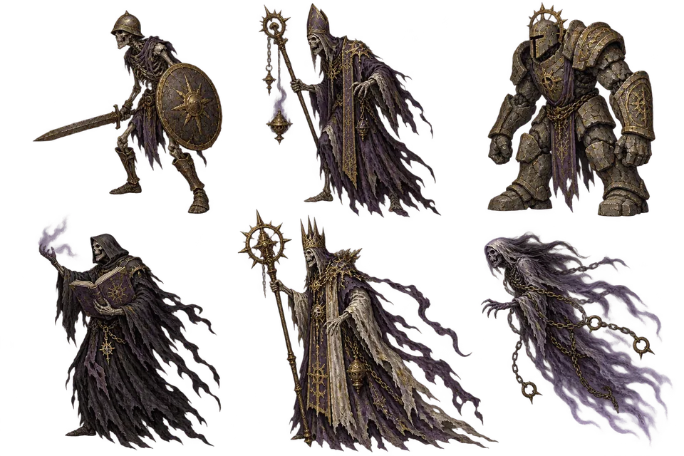
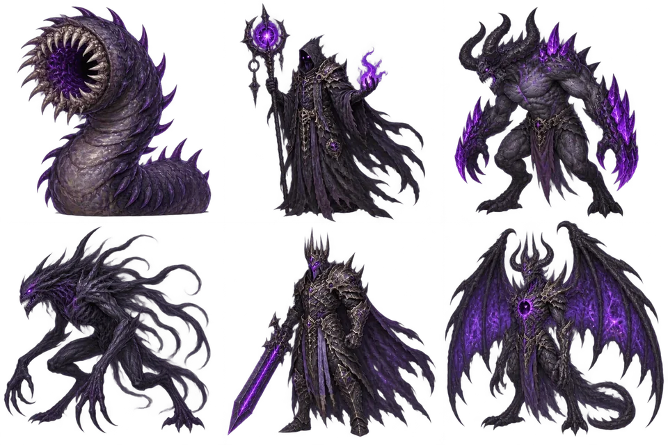
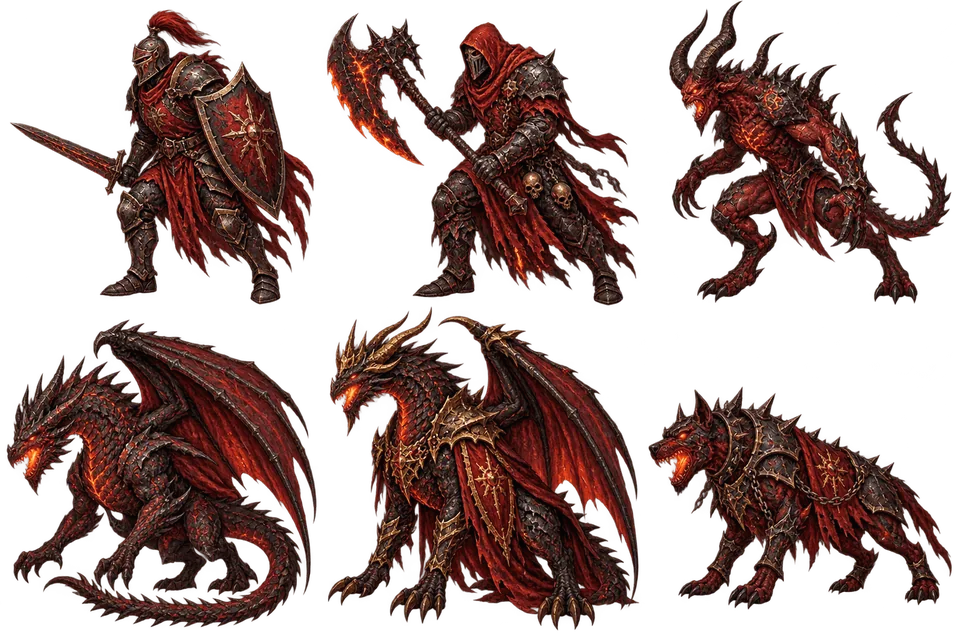

Bölgeler ve canavarlar
6 bölge seviyene göre açılır. Bölgedeki canavarların çoğunu yenince harita sonu boss'u kilidi açılır.
Fallow Valley
Seviye 1–15| Canavar | Can | Saldırı | Savunma | Deneyim |
|---|---|---|---|---|
| Sis Kurdu | 81 | 8 | 12 | 21 |
| Kabuklu Golem | 103 | 9 | 16 | 27 |
| Otlak Yabanisi | 132 | 10 | 20 | 34 |
| Bataklık Sürüngeni | 169 | 12 | 26 | 43 |
| Nadas Devi | 215 | 15 | 30 | 55 |
Harita sonu boss'u: Fallow Valley Muhafızı. Can 538, saldırı 17, savunma 39. Günde bir kez yenilebilir ve garantili sandık verir.

Ashen Canyon
Seviye 15–25| Canavar | Can | Saldırı | Savunma | Deneyim |
|---|---|---|---|---|
| Kül Yaratığı | 338 | 23 | 44 | 66 |
| Volkan Sürüngeni | 382 | 24 | 48 | 76 |
| Kanyon Akrebi | 432 | 28 | 53 | 87 |
| Lav Ruhu | 488 | 30 | 62 | 99 |
Harita sonu boss'u: Ashen Canyon Muhafızı. Can 1.220, saldırı 35, savunma 81. Günde bir kez yenilebilir ve garantili sandık verir.

Frostburn Summit
Seviye 25–40| Canavar | Can | Saldırı | Savunma | Deneyim |
|---|---|---|---|---|
| Buzul Kurdu | 810 | 41 | 78 | 116 |
| Alev Örümceği | 938 | 47 | 88 | 136 |
| Don Devi | 1.040 | 50 | 94 | 156 |
| Kor Salamanderi | 1.142 | 58 | 104 | 178 |
| Zirve Muhafızı | 1.254 | 63 | 114 | 202 |
Harita sonu boss'u: Frostburn Summit Muhafızı. Can 3.135, saldırı 72, savunma 148. Günde bir kez yenilebilir ve garantili sandık verir.

Ruined Sanctuary
Seviye 40–50| Canavar | Can | Saldırı | Savunma | Deneyim |
|---|---|---|---|---|
| Harabe İskeleti | 2.059 | 106 | 138 | 228 |
| Lanetli Rahip | 2.228 | 116 | 147 | 253 |
| Tapınak Bekçisi | 2.462 | 126 | 159 | 283 |
| Gölge Vaizi | 2.780 | 135 | 171 | 316 |
Harita sonu boss'u: Ruined Sanctuary Muhafızı. Can 6.950, saldırı 155, savunma 222. Günde bir kez yenilebilir ve garantili sandık verir.

Abyssal Pit
Seviye 50–60| Canavar | Can | Saldırı | Savunma | Deneyim |
|---|---|---|---|---|
| Uçurum Solucanı | 3.328 | 193 | 214 | 349 |
| Karanlık Çağırıcı | 3.669 | 204 | 228 | 381 |
| Dip İblisi | 4.040 | 218 | 238 | 417 |
| Kabus Gölgesi | 4.453 | 235 | 252 | 455 |
| Uçurum Efendisi | 4.905 | 248 | 272 | 497 |
Harita sonu boss'u: Abyssal Pit Muhafızı. Can 12.263, saldırı 285, savunma 354. Günde bir kez yenilebilir ve garantili sandık verir.

Crimson Battlefront
Seviye 60–65| Canavar | Can | Saldırı | Savunma | Deneyim |
|---|---|---|---|---|
| Kızıl Muhafız | 5.774 | 338 | 319 | 535 |
| Alev Celladı | 6.135 | 353 | 331 | 565 |
| Kaos İblisi | 6.517 | 364 | 338 | 597 |
| Kıyamet Ejderhası | 6.921 | 378 | 353 | 631 |
Harita sonu boss'u: Crimson Battlefront Muhafızı. Can 17.303, saldırı 435, savunma 459. Günde bir kez yenilebilir ve garantili sandık verir.

Bir bölgeden başkasına geçmek için kapı kullanılır; ışınlanma altın ister.